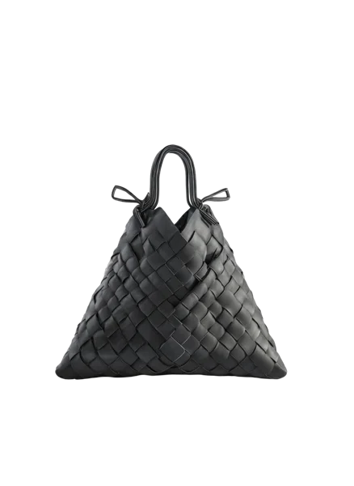
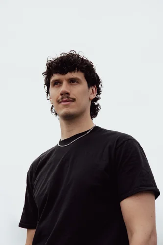

AI versnelt de uitvoering.
Jij bepaalt de richting.
Begin bij wat je klant moet voelen bij je winkel of collectie. AI helpt bij het maken van beelden; jij bepaalt de sfeer en de boodschap.
Na de training zelf verder. De belangrijkste inzichten, promptingtips en tools voor jouw winkel. Begin bij het gevoel dat je wilt overbrengen; bouw van daaruit aan je campagnebeeld.
Bekijk de takeaways

Het vertrekpuntDrie inzichten voor je volgende retailcampagne.
Begin bij wat je klant moet voelen bij je winkel of collectie. AI helpt bij het maken van beelden; jij bepaalt de sfeer en de boodschap.
Je eigen productfoto’s en bestaand merkbeeld geven richting. Vertel wat het product is, voor wie je het laat zien en welke winkeluitstraling je wilt behouden.
Vergelijk het resultaat met het echte product. Kleur, materiaal, details en verhoudingen moeten blijven kloppen. Jij beoordeelt of het beeld past bij je winkel en wat je klant mag verwachten.
Gebruik RCTF voor één artistiek sfeerbeeld. Je verkent een visuele richting voor je product of dienst; de uitwerking komt later.
Vul je gevoel in. Hier verschijnt je RCTF-prompt voor één beeld.
Plak de prompt in Gemini en kies afbeeldingen maken. Een sfeerreferentie kun je daar toevoegen.
Inspiratie nodig? Zoek op Pinterest met twee of drie kernwoorden voor je gevoel, aangevuld met ‘light’, ‘texture’ of ‘interior’. Gebruik een referentie om sfeer te verduidelijken, niet om een beeld exact na te maken.
Meer richting hoeft niet meer woorden te betekenen.
Benoem wat je collectie moet uitstralen: bijvoorbeeld warm en huiselijk, fris en sportief of rustig en verfijnd. Kies wat bij jouw winkel past.
Gebruik voor je eerste sfeerbeeld een referentie voor kleur, licht of textuur. Benoem wat je daarin aanspreekt. Je eigen productfoto voeg je pas toe wanneer je de gekozen sfeer verder uitwerkt.
Gebruik RCTF als kapstok, niet als lange checklist. Laat AI je formulering eventueel aanscherpen, zonder extra opdrachten toe te voegen. Eén prompt, één doel.
Beoordeel eerst de sfeer. Verander daarna één ding tegelijk, zoals het licht. De product- en merkchecks gebruik je bij de latere uitwerking.
Kies de tool bij je doel. Voor je eerste sfeerbeeld is Gemini genoeg.
Gebruik je korte RCTF-briefing om een beeld te maken. Beoordeel eerst het gevoel; stuur daarna gericht bij op bijvoorbeeld kleur of licht.
Bekijk GeminiBewerk meerdere productfoto’s in een batch, bijvoorbeeld met dezelfde achtergrond. Controleer of materiaal, kleur en details van elk artikel kloppen.
Bekijk PhotoroomLaat je eigen idee korter en duidelijker verwoorden. Vraag om je bedoeling te behouden en geen nieuwe wensen aan de opdracht toe te voegen.
Bekijk ClaudeEen tool voor AI-beelden en video. Interessant als je een gekozen visuele richting later wilt onderzoeken in bewegend beeld.
Bekijk HiggsfieldGebruik een voorspellende heatmap bij een uitgewerkt ontwerp. Dit is geen meting bij jouw klanten en geen bewijs van meer verkoop.
Bekijk Attention InsightDe AI4U-slides uit de workshop, met het aanbod van MKB Werkplaats Utrecht, informatie over AI-studentopdrachten en de QR-code naar de contactpagina voor een intake.
Op je telefoon? Gebruik de contactpagina van MKB Werkplaats Utrecht om te informeren naar een intake of studentenopdracht.

Wil je verder met de beelden voor je winkel, heb je een vraag over je eigen productfoto’s of zoek je een training voor je winkelteam? Stuur me een bericht en vertel waar je aan werkt.
info@maxhelmantel.com